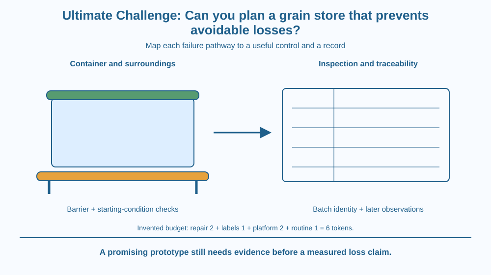

Design a small grain-storage plan that reduces avoidable losses through coordinated controls. Combine entry barriers, starting-condition checks, water-availability awareness and records. Your deliverable is a design-and-inspection system, not a food-safety certificate or a homemade pesticide treatment.
A school demonstration store has strong-looking containers, yet nobody knows which batch entered which one, whether residues were cleaned out or whether lids fit properly. A later problem is difficult to investigate because the equipment was chosen without a management plan.
Your challenge is to design the system before real grain is stored. A useful plan must connect container features with routines and evidence. Buying the thickest-looking box does not solve a missing label, hidden initial infestation or water leaking into the room.
You have limited design tokens, so every feature needs a purpose.
Start with failure pathways. New pests can enter through damaged boundaries. Hidden stages can arrive with the grain. Water can change storage conditions, and mixing unidentified batches can make the history difficult to reconstruct. Each pathway needs an appropriate control.
Exclusion uses sound walls, closures and maintained seals to reduce new entry. It does not destroy insects already present. The earlier container lesson therefore contributes both a design feature and a limit that must remain visible in the final plan.
The starting condition includes grain history and the state of the empty container. Appropriate adult inspection and cleaning address sources that a closed lid cannot erase. The plan must state who performs these tasks rather than relying on an unspecified future someone.
Water availability influences microbial activity. The salt-preservation lesson showed why visible moisture alone is not a complete description. Grain storage requires suitable conditions for the actual material and process; this challenge does not transfer a pickle recipe or an invented salt dose to dry grain.
The room and handling routes matter. A leak, damp contact surface or wet tool can change the environment. Containers should therefore be considered within the surrounding storage arrangement, not as isolated objects with no incoming material or water pathways.
Identification records preserve batch and observation history. Labels can connect contents with source, entry date and container identity. A record is useful only when the labels remain readable and the routine actually records changes.
Inspection should look for specified signs and boundary problems without requiring students to open suspect grain or handle infestation. A response plan identifies a responsible adult and separates suspicious material from ordinary classroom investigation. It does not prescribe fumigation or improvised chemicals.
Finally define success narrowly. A design may reduce known pathways and make problems easier to detect without guaranteeing zero loss. Performance needs observation under real supervised conditions. A paper prototype supports a reasoned proposal, not a measured percentage improvement.
Draw four connected boxes: incoming batch, prepared container, storage setting and inspection record. Put arrows at every transfer. Mark which barrier or procedure controls each arrow.
Add a question beside each control: what evidence would show it was completed? A label can show identity, a recorded check can show a lid inspection and a room note can show a leak was noticed. None alone proves every condition is satisfactory.
Then remove one control and trace the remaining gap. This tests the design as a system. It also reveals whether two expensive features solve the same pathway while an important different pathway has been left unaddressed.
The SVG shows labelled containers on a clean dry model platform, a maintained lid boundary and an inspection card. Incoming-batch and room-water pathways are drawn separately.
A budget panel uses invented tokens, not real prices. For example, a model plan can allocate two tokens to closure repair, one to labels, two to the platform and one to an inspection routine, totalling six. The costs are a design exercise only.
A lower decision panel asks whether every identified pathway has a control and a responsible person. The diagram is not an installation specification or a claim that these features meet every real storage requirement.

Household and farm storage in India operate at different scales, but both depend on equipment and practices working together. A routine that is too difficult to maintain can undermine an attractive initial design.
School planning can use empty containers and paper batch cards without exposing children to contaminated material. A real food store needs appropriate adult management and suitable guidance for its contents and conditions.
This challenge differs from designing a whole sustainable city. Its scope is a specific storage system with traceable failure pathways, limited resources and explicit claims. A small well-defined problem makes the proposed controls easier to assess.
Use paper, a pencil and six drawn design tokens. No grain, pests, chemicals or food incubation is needed.
Revise the plan before calling it complete. The five-minute output is a prototype, not evidence of improved storage life. If an actual container is used as a prop, it must be clean, empty and unbreakable, and no child should climb on a platform or shelving.
A plan spends every token on thicker walls but none on lids, labels or checks. Which failure pathways remain? Explain why one highly developed feature does not guarantee system reliability.
Now imagine excellent inspection records with containers that cannot be closed properly. What is the opposite mismatch? Useful design requires both physical controls and routines that fit the actual risks.
What should the design identify before choosing features?
Answer: B — Mapping pathways connects each proposed feature with a specific risk or need.
Why are labels useful alongside sealed lids?
Answer: A — Records support traceability while lids address a different physical pathway.
A paper design looks promising but has no real trial data. What should its report do?
Answer: C — A reasoned prototype does not by itself establish measured performance.
Deliver a one-page design with a layout, pathway map, token budget, label template, inspection routine and adult response rule. Explain how at least three features connect to the earlier mechanisms.
Peer-review the plan for coverage, usability and honest limits. Revise one item after feedback. End with a statement of what would need observation before claiming a numerical reduction in loss. Do not invent a trial result to make the prototype sound successful.
A good design can spend resources on information as well as objects. Labels and records do not physically block an insect, but they make the starting conditions and later changes traceable. They complement barriers by helping people understand and respond to the system rather than guessing after a problem appears.
A grain-store design combines suitable barriers, starting-condition controls, water management and usable records; its claims must stay within the evidence.